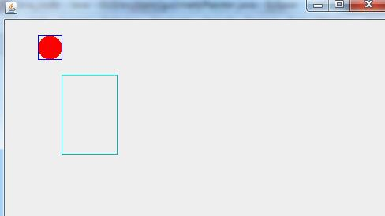

GUI中的画图实例
//:com/gui/start/Painter,java
package com.gui.start;
import java.awt.*;
import javax.swing.*;
public class Painter extends JFrame {
public void paint(Graphics g) {
Color c = g.getColor(); //获取当前画笔的颜色
g.setColor(Color.red);
g.fillOval(50, 50, 30, 30);
g.setColor(Color.blue);
g.drawRect(50, 50, 30, 30);
g.setColor(Color.cyan);
int x = 80;
int y = 100;
int width = 70;
int height = 100;
boolean raised = true;
g.draw3DRect(x, y, width, height, raised);
g.setColor(c); //恢复现场
}
public Painter() {
setLayout(new FlowLayout());
setDefaultCloseOperation(JFrame.EXIT_ON_CLOSE);
setSize(500, 700);
setLocation(300, 300);
setVisible(true);
}
public static void main(String[] args) {
new Painter();
}
}

画图主要是重写paint方法，setColor用于设置颜色，图形的绘制可以查API文档，恢复现场是一个好习惯 paint方法自动调用的时机：GUI放大和缩小,GUI的尺寸发生变化,GUI启动